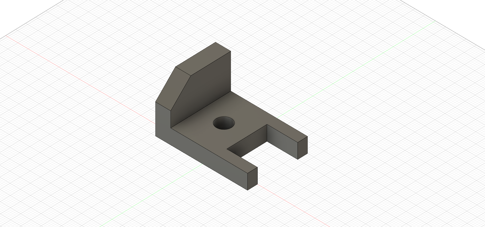
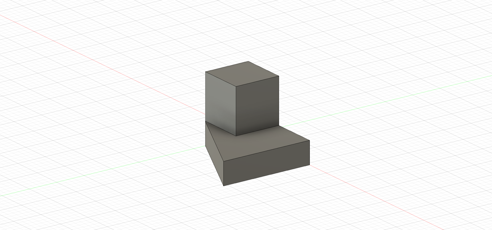
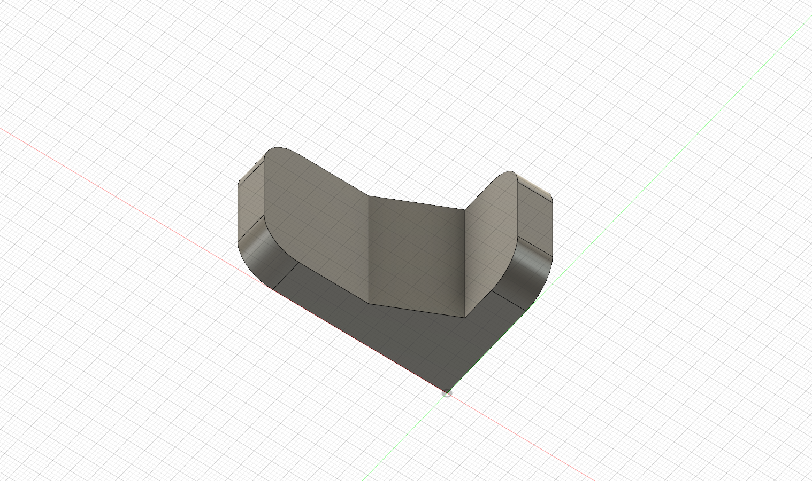
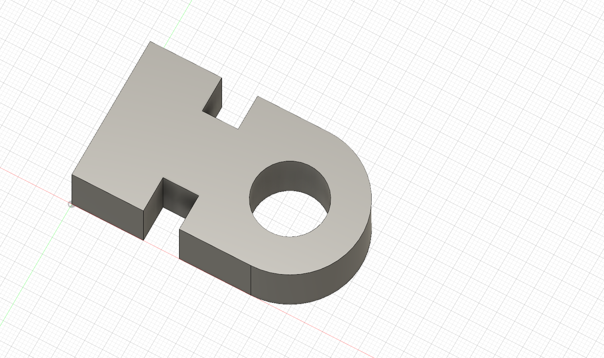
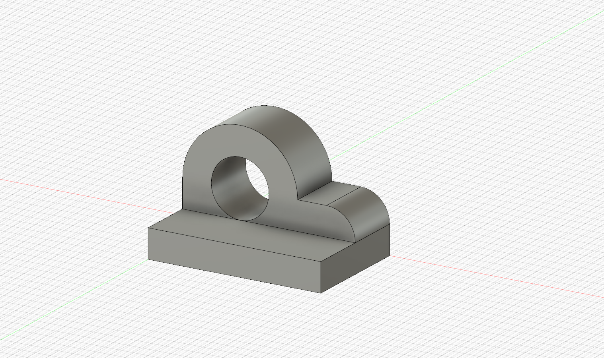
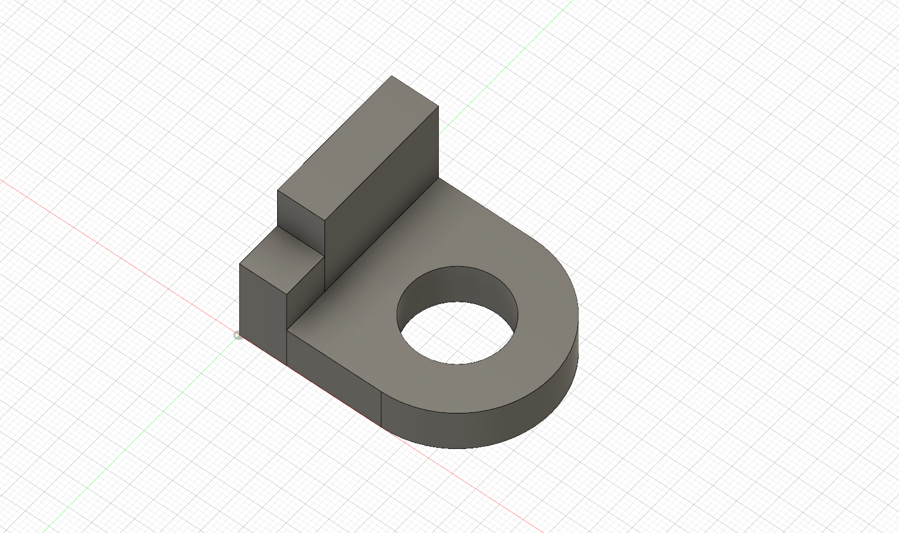
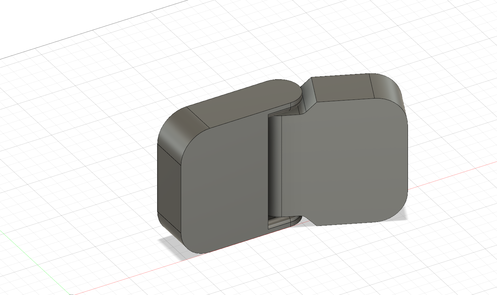
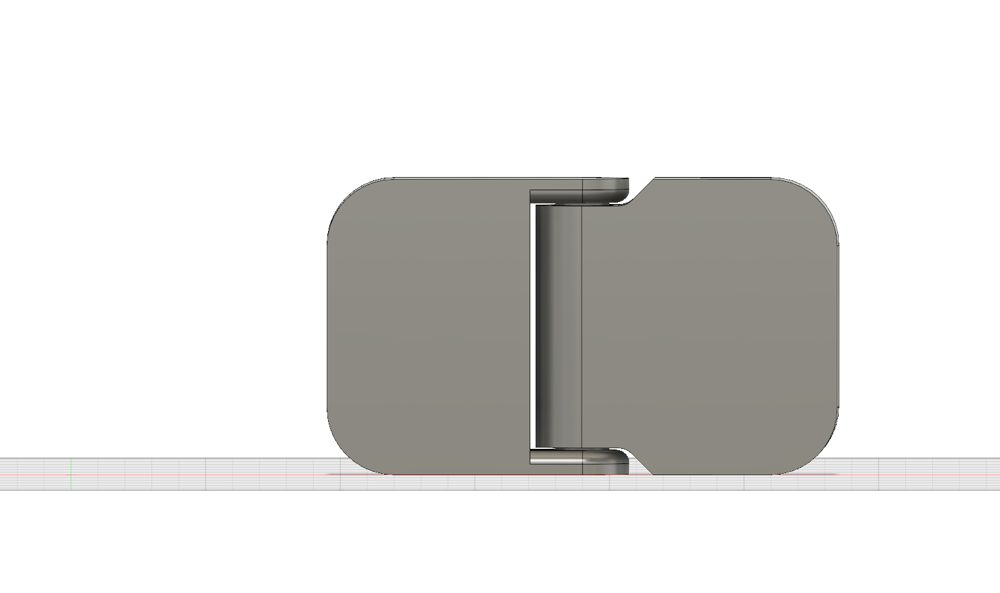
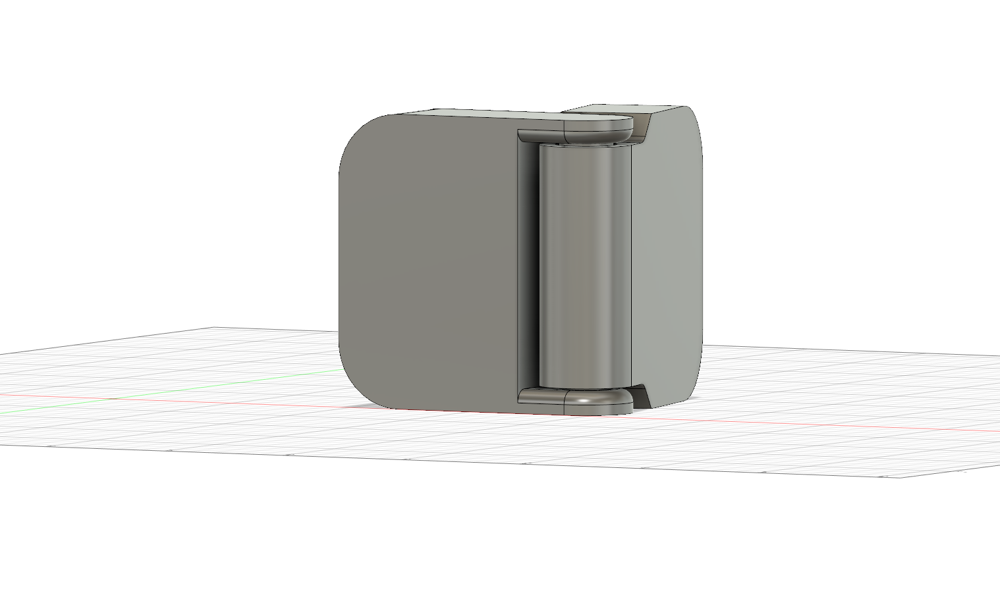

In this rotation we used fusion 360 to design a few different objects, and extrude a 3d model of them. So far this rotation has been my favorite.
Having cad experience in the past it was fun getting back to it and seeing how it has changed over the last few years.
     The Challenge I chose was the hinge. Although a simple piece, hinges are everywhere around us and are arguably one of the most important parts of anything.
  